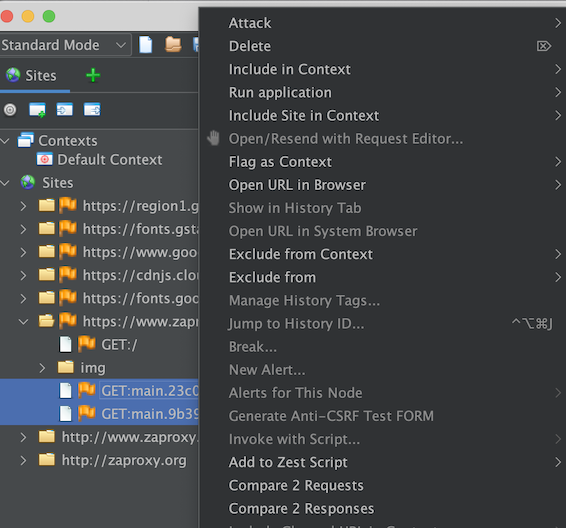
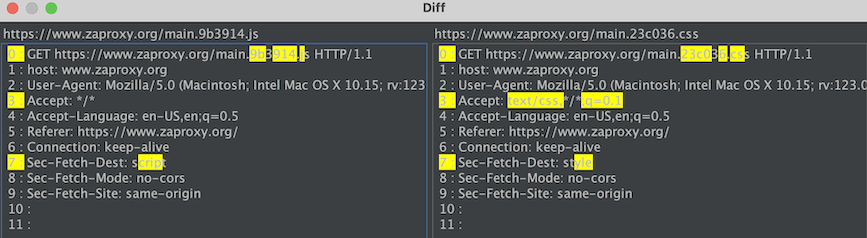

Diffアドオンを使用すると、2つのメッセージ (リクエストまたはレスポンス) を比較できます。
複数のメッセージを表示するビューコンポーネント (例: サイトツリー) で2つのメッセージを選択し、コンテキストメニュー (通常は右クリックで開きます) からアクセスできます。 コンテキストメニューには、「2つのリクエストを比較」、「2つのレスポンスを比較」というオプションが表示され、いずれかをクリックするとDiffウィンドウが開きます。
2つのメッセージを選択した際のコンテキストメニューの表示例を以下に示します
注: 1つのメッセージだけを選択してコンテキストメニューを開いた場合、これらのオプションはグレー表示 (無効) になります。
Diff ウィンドウでは、2つのメッセージの差分が黄色で強調表示されます。
